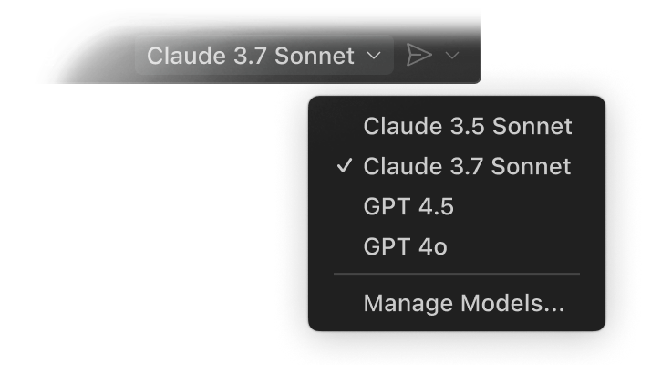

Your code editor. Redefined with AI.

Use AI models like Claude Sonnet out of the box, or bring your own key to access models from Azure, Anthropic, Google, Ollama, OpenAI, and OpenRouter.
Your codebase is indexed locally and remotely (on GitHub) to understand what's relevant, enabling fast, context-aware interactions.

Personalize interactions using custom instructions and reusable prompt files tailored to your workflows, tools, and projects.

Tackle complex, multi-step tasks. Agent mode
reads your codebase, suggests edits across
files, runs terminal commands, and responds to compile or test
failures — all in a loop until the job is done. Further refine agent
mode to fit your team's workflows with VS Code extensions and Model
Context Protocol (MCP) servers.

VS Code predicts your next move as you code. Use the Tab key to accept AI-powered suggestions right in your editor. It intelligently recommends what to change — and where — based on the edits you're already making..

Customize VS Code with AI-powered functionality from extensions and Model Context Protocol servers to use in Chat. Or, build your own extension to power your team's unique scenarios.

Adds rich language support for Python

Build, test, and use Stripe inside your editor

Adds rich language support for C/C++

Language support for Jupyter Notebooks

Adds rich language support for Python

Supercharge your Git experience

Powerful tools for your C# environment

Extension for the @MongoDB agent

Streamline the process of developing for Azure
VS Code supports almost every major programming language. Several ship in the box, like JavaScript, TypeScript, CSS, and HTML, but extensions for others can be found in the VS Code Marketplace.


Customize your VS Code UI and layout so that it fits your coding style.
Color themes let you modify the colors in VS Code's user interface to suit your preferences and work environment.
Settings Sync enables you to share your user settings across your VS Code instances with the Settings Sync feature.
Profiles let you create sets of customizations and quickly switch between them or share them with others.

Code wherever you're most productive, whether you're connected to the cloud, a remote repository, or in the browser with VS Code for the Web (vscode.dev).
Built-in Source Control empowers you with Git support out-of-the-box. Many other source control providers are available through extensions.
GitHub Codespaces provides cloud-powered development environments for any activity - whether it's a long-term project, or a short-term task like reviewing a pull request.

There's a lot more to an editor. Whether it's using built-in features or rich extensions, there's something for everyone.

Use your favorite shell whether it's zsh, pwsh, or git bash, all inside the editor.

Run and debug your code without leaving your editor.

Built-in support for git and many other source control providers.

Run tools and analyze their results from within VS Code.

Never lose your changes with automatically tracked local history.

Your theme is an extension of your personality. Add some flair to your editor and add your touch.

Optimized experience for screen readers, high contrast themes, and keyboard-only navigation.

Whether you are on your phone, tablet, or desktop, you can access your code from anywhere.